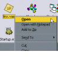
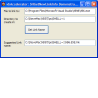
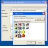
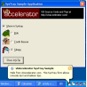
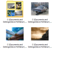
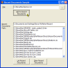
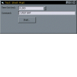

High Resolution Multimedia Timer
High Resolution Multimedia Timer
 Subclassing and Hooking with Machine Code Thunks
Subclassing and Hooking with Machine Code Thunks

Shell Projects Index
|  | Registering File Associations and Passing Command Line Parameters to an Existing App InstanceMany windows applications register file associations. When you double click on an associated file, it is nice to have the flexibility to decide what happens. Without code, VB applications work like the Notepad SDI model - if you double click on a .TXT file you get a new instance. But other apps, for example Microsoft Word and WinZip, detect if a window is already open to handle the file, and if it is that window is used to open the file. This article demonstrates how to register associations and an easy-to-use module which can pass any parameters to an existing instance of your application. Last Updated: 15 February 2004 |
|  | Getting the Correct Filename for a ShortcutIf your application creates or otherwise manipulates shortcuts then you should use the Operating System to determine what the filename for the shortcut should be, as the extension is subject to i18n. This article demonstrates how to use the SHGetNewLinkInfo API call to do this, and also provides a handy class which can make working with ANSI and Unicode String API declares in the same code easier. Last Updated: 23 October 2003 |
|  | Creating Shortcuts using VBThis article expands on the cShellLink class provided to allow the shortcuts used in Window's Recent Document Collection to be investigated. It demonstrates how to use the class to read and write shortcuts, including choosing the icon, start up directory and more. Last Updated: 28 March 2003 |
|  | Add Your App to the Systray the Easy WayThis sample application presents a small form which you can drop into your project to get immediate SysTray support. A lot of the source code I've seen for VB SysTray interfaces has used an OCX or DLL and subclassed for a SysTray message, however, it turns out you don't need to do this, because you can specify what message Windows will use to notify you of events in the tray. As a consequence, you just need to choose a message that corresponds to a Visual Basic event - in this case the sample code uses the WM_MOUSEMOVE message. This fires a mouse move event on the Visual Basic form, with the x parameter set to the corresponding notification flag. Last Updated: 3 March 2003 |
|  | Thumbnail Extraction Using the ShellSince Windows Me/2000, the Windows Shell has included a mechanism for extracting a small thumbnail image for any item in the namespace. This sample demonstrates how to use this function to get thumbnail images for web pages, images, Office documents - in fact anything that supports thumbnailing in Explorer. Last Updated: 14 February 2003 |
|  | Adding, Deleting and Viewing Recent DocumentsThis sample demonstrates how to add, read and clear the Shell's Recent Document List from VB code. At the same time, it provides a useful ShellLink class for working with Shortcuts. Last Updated: 12 February 2003 |
|  | Shell an application and wait asynchronously for completionSurprisingly often it comes in handy to be able to shell another application and wait for it to complete. This sample shows what I think is the best way to do it. At least, this method has been totally reliable for me. Its better than some methods I have seen because the application isn't frozen whilst the shelled application runs. Therefore the display is kept refreshed and it doesn't look like the app has hung. Last Updated: 15 June 1998 |